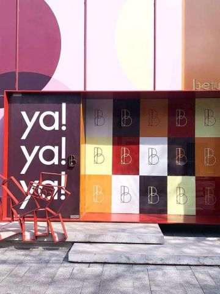
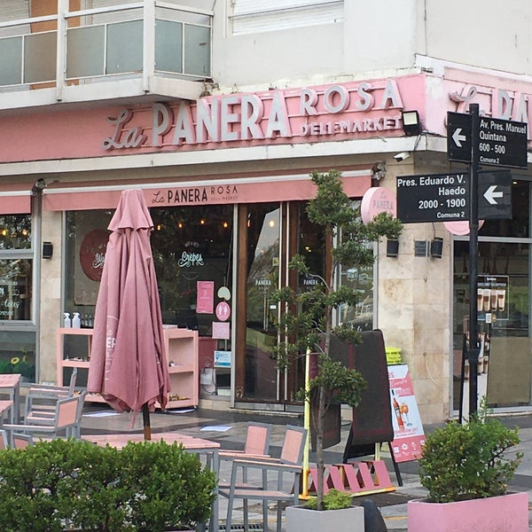

"Betular Pâtisserie"

El pasado 29 de agosto, el jurado de MasterChef Celebrity Argentina, abrió oficialmente las puertas de Betular Pâtisserie, ubicada en Mercedes 3900 (esquina Asunción). “Tiene todo lo que me gusta a mí: los dulces, el café, las flores”
etular Patisserie tendrá todos los hits del ex Chef Ejecutivo del Palacio Duhau: sus famosos macarons, diferentes tortas, panadería artesanal y especiales para la hora del té.
Será una experiencia completa desde la entrada hasta la salida: dentro del local habrá una heladera de 15 metros de largo repleta de delicias como macarons, trufas, minitortas, tortas de cumpleaños, panes artesanales y viennoiserie (facturas) y a la salida habrá una florería y un patio con unas pocas mesas.
"La panera rosa"

El primer local de La Panera Rosa, nace en Buenos Aires, en el año 2013 ofreciendo una variada carta con opciones dulces y saladas. Se destacó su propuesta original de pancackes, crepes, waffles y pastelería artesanal, sumando platos principales, ensaladas, sandwichs gourmet, entradas y picoteo. Ideas que en su base, fueron consecuencia de viajes por EEUU, Francia y Argentina, extrayendo lo mejor de cada lugar para crear un mix único y bien definido.
La similitud entre la estética rosa de los locales y los dibujos animados de “La Pantera Rosa” fue algo premeditado.
El creador de la marca buscaba en este nuevo concepto gastronómico un refugio culinario donde la experiencia recuerde a los sabores de la infancia, a la cocina de las madres y las abuelas, como el sabor y el olor del pan recién hecho. En su cabeza este recuerdo estaba asociado a las meriendas viendo los famosos dibujos animados.